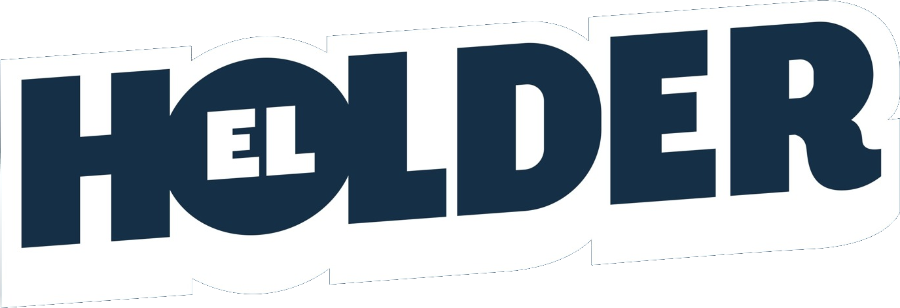

Guárdalo · Compártelo
Huang admite una infidelidad.La junta investiga un posible caso de espionaje.
La trama crece.The Information liga a la mujer con una red que movió chips a China.
Sale un segundo presunto romance.La junta se reúne de emergencia.
Huang renuncia a todo.La acción llega a caer 13%. Kress, CEO interina.
Lo que viene: resultados trimestrales.El primer reporte de Nvidia sin Jensen.

Fuentes: Nvidia, NYT, WSJ, The Information